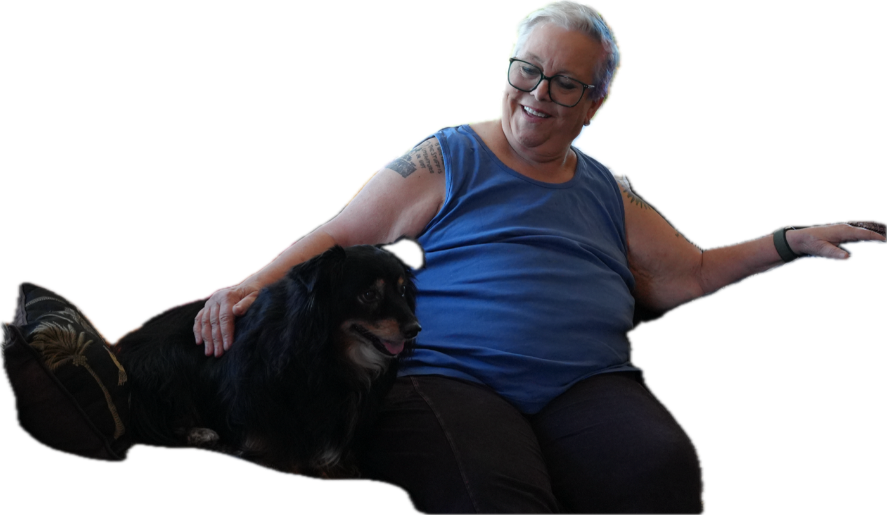
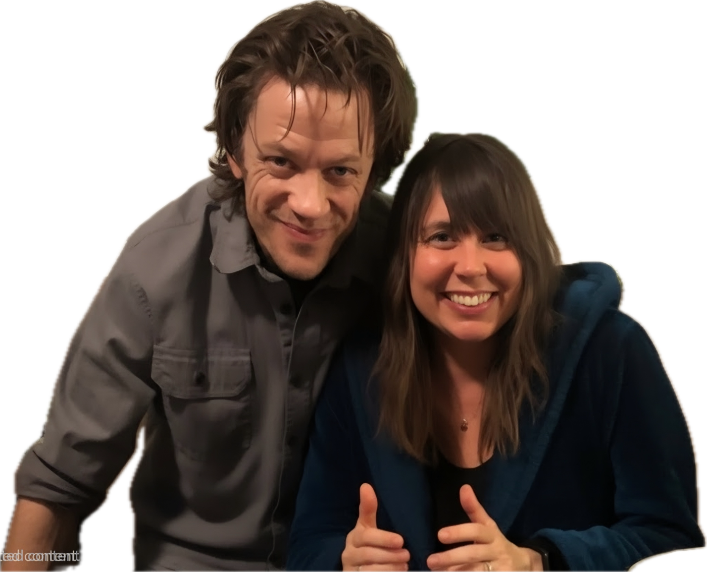
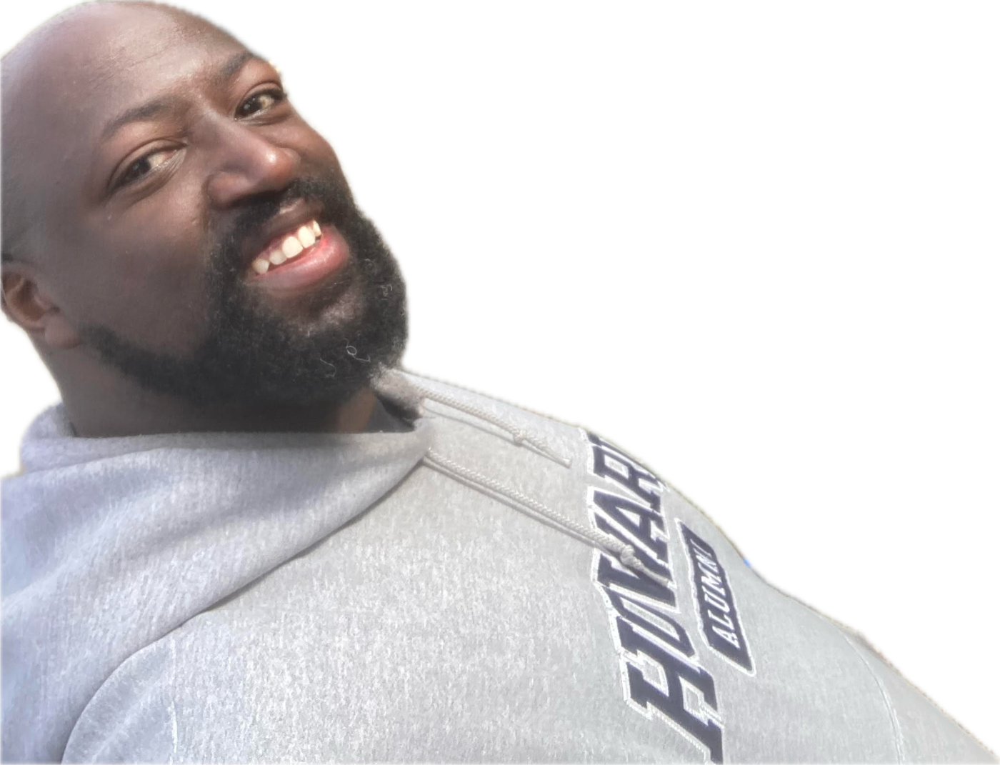
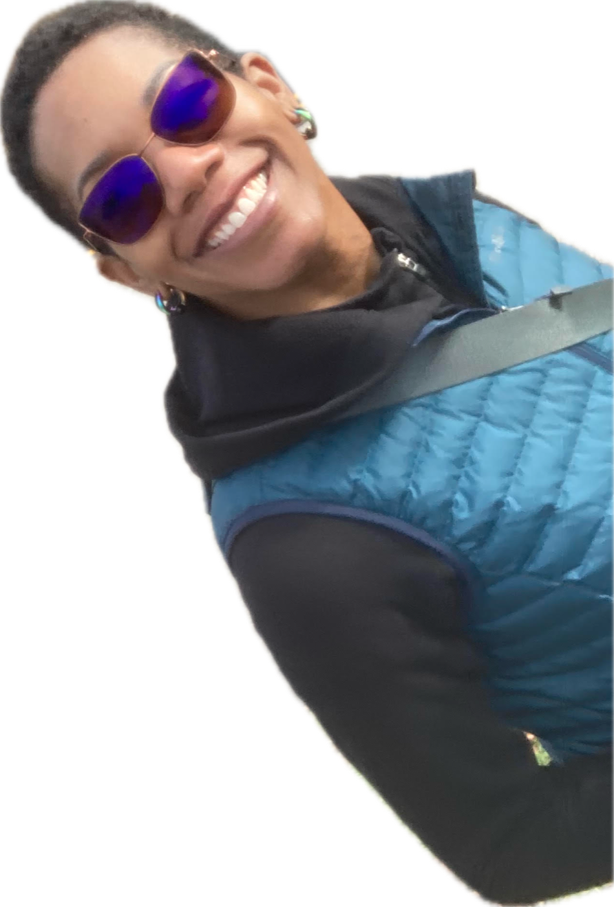
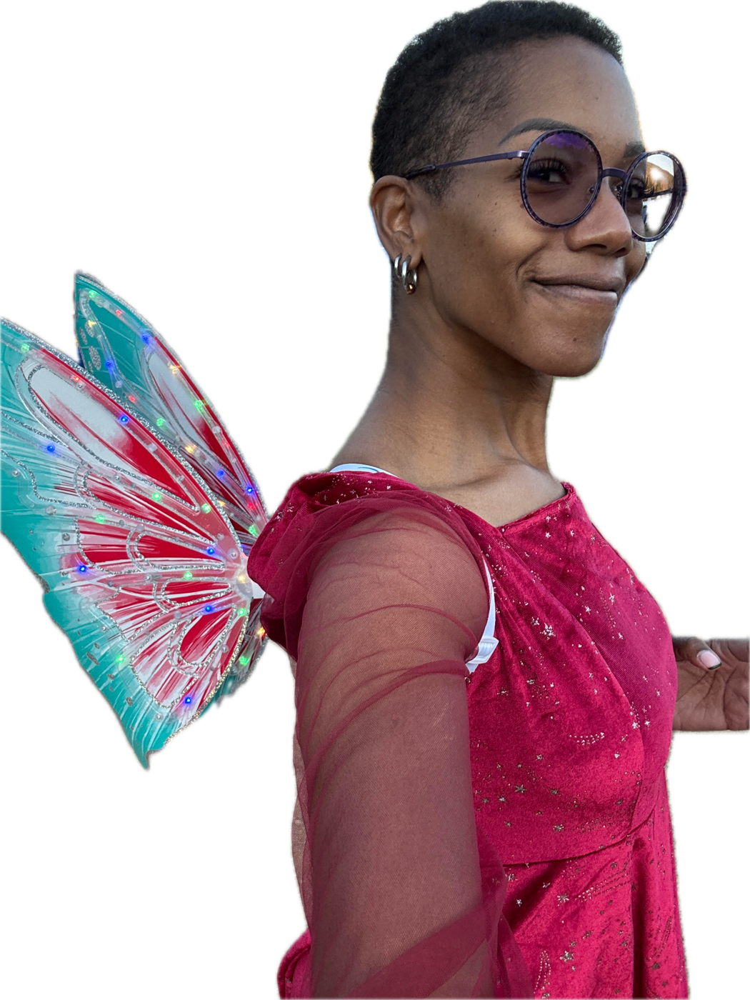

COM·PER·SION
/kûm-pər-zhən/
noun
The opposite of jealousy. Delight taken in a partner’s love for another, much as a parent takes joy in the blossoming of a beloved child.
By Charlie Feuerborn Photography and additional interviewing by Trisha Bonthu Design by Taylor Steinbeck
Preamble
I first discovered the word compersion in a PDF article I found on the internet called “What Psychology Professionals Should Know About Polyamory,” a primer for therapists written by five therapists, psychology professionals, and researchers who saw a gap in training on how to work with poly clients. So began my journey of identifying as polyamorous and practicing polyamory over the last three years.
San Francisco has had a front-and-center role in the development of the lingo throughout polyamory’s recent rise to popularity. The word compersion was invented in Haight-Ashbury in the 1980s. Distinctions between open relationships and other forms of nonmonogamy were ironed out in conversations among the queer and alternative-lifestyle community in the Bay Area and put in writing with The Ethical Slut, written by SF locals Dossie Easton and Janet Hardy in 1997. It went on to become a blockbuster success and brought nonmonogamy out of SF and into the public eye. Today, local mischief-maker Danielle Egan (@rawandferal on Substack) popularized the “Special Move.” Intrigued by the connection between polyamory’s foremost writers and SF, I sought out authors of impactful poly books and asked about the effect the city has had on their lives and works, as well as what I could learn directly from their poly journeys. Here are some of those conversations.
San Francisco Roots
What brought you to San Francisco? How much time did you spend there while discovering your own poly journey or writing your books? Why did you leave? Did you grow up there or elsewhere?

Janet Hardy, co-author of The Ethical Slut: A Guide to Infinite Sexual Possibilities (1997); the second edition, A Practical Guide to Polyamory, Open Relationships and Other Adventures (2009); and the third edition, A Practical Guide to Polyamory, Open Relationships, and Other Freedoms in Sex and Love (2017). Age 71, lifelong professional writer, interviewed at a café in Eugene, Oregon, near their home: I was living in Sacramento during my first marriage. I started spending any spare time I had in the city. It took about a year or a year and a half before I threw in the towel, moved down there, and dropped into this completely immersive lifestyle. I eventually left because nobody can afford to live there—our basic housing costs were $4,000 a month.

Jessica Fern, author of Polysecure: Attachment, Trauma and Consensual Nonmonogamy (2020) and co-author of Polywise: A Deeper Dive Into Navigating Open Relationships (2023). Age 46, integrative psychotherapist, interviewed remotely from her home in Asheville, North Carolina: I grew up in Brooklyn, New York. I went out to California for massage school, and San Francisco was one of the first stops on that trip; there had always been a strong draw to go there. Arriving at the Pacific Ocean was a powerful moment for me. The cross-country drive was significant, and finally getting to the Pacific Ocean, standing at one of the marinas at the bay, I started to cry—crying because I knew I needed to be there. It felt like a spiritual home, even though it was never technically a long-term home.
David Cooley, co-author of Polywise (2023) and creator of the Restorative Relationship Conversation therapy model. Life partner and co-parent with Jessica, though legally divorced since 2020. Age 47, professional restorative-justice facilitator and intimate-relationship therapist, interviewed simultaneously and remotely from a different floor of the same home in North Carolina: I was an East Coast kid, and the West was always a symbolic beacon of revolution and spiritual transformation—things that weren’t available in a cultural way on the East Coast. When I finished college, I started moving out west. In high school, I got high on reading the works of Jack Kerouac and the Beat poets, and San Francisco was the nexus of alternative thinking that appealed to me. I eventually went to Northern California to the massage school where Jessica and I fatefully met.

Kevin Patterson, author of Love’s Not Color Blind: Race and Representation in Polyamorous and Other Alternative Communities (2018). Age 47, technical writer, interviewed remotely during a regular date night at another long-term partner’s home: I’ve lived on the East Coast my whole life. I was born in New York, raised in New Jersey, went to school in DC, and live in the Philadelphia area now. My time in SF has been limited to visiting friends and family and touring.
Did you or your co-author live in the city itself during your time in the Bay Area?
Janet: I started in San Francisco and then moved to Oakland. When I first met my co-author, Dossie Easton, she was still in the city, but shortly thereafter she moved to Marin and has been there ever since.
Jessica: Yes, I lived in the city itself.
David: I did a several-month stint in the Mission District in the early 2000s and loved it. I discovered that I had several removed family connections: my brother’s wife’s uncle had a place in the Castro District, and I stayed there for a while, which was dope.
What influence did San Francisco or the Bay Area have on writing your books?
Janet: The actual task of writing... I don’t think San Francisco had much to do with that. But having beta readers and interviewees—it was nice having everyone clustered in the same space.
Jessica: A lot of my clients are from California, specifically the Bay Area, and the bulk of both books comes from those many client hours.
David: The overwhelming majority of my clients are from the Bay Area—specifically Oakland, Berkeley, and San Francisco. Part of that is a strong referral network, and another part is the ethos. The cultural ethos is so strong in that area.
Kevin: San Francisco really came to bat for me during my book tour for Love’s Not Color Blind in the summer of 2018. On the East Coast, things feel colder and more congested, whereas in San Francisco, things felt spaced out and welcoming. People felt comfortable having the conversation; I didn’t have to fight through three layers of “Why are you asking me this question?” before offering an educational experience. There was also HBCU love in Oakland because the owner of the sex shop Feelmore went to FAMU. My wife and I went to Howard, so that shared connection made it a great trip.
Though polyamory has been practiced in various cultures throughout history, it has become a much more visible community and countermovement in the last half-century. Why do you think SF was an epicenter for this rediscovery and popularization?
Janet: I think with all alternative sexualities, San Francisco is the place where people move those ideas forward. There is original thinking; a lot of the activists, authors, and teachers of whatever kind of alternative sex you are talking about tend to be in San Francisco. We mostly all fuck each other and learn from each other. It is a melting pot of alternative sexualities.
Jessica: In connection to nonmonogamy, it was the openness and the resonance with California culture that felt like one of those stepping stones to alternative life in many ways: alternative food, alternative culture, queer culture, and nonmonogamy culture.
David: San Francisco represents a flashpoint of cultural freedom and experimentation. There is a consistent cultural milieu that foments people experimenting with different lifestyles, belief systems, and thinking outside of the box. The hippie revolution exposed a significant percentage of our population to psychedelics, which is why it serves as an outpost of consciousness growth. There is a willingness to try stuff that is off the beaten path.
How do you think your writing has affected polyamory or ethical nonmonogamy? Have you seen an effect in the way people engage in their relationships since you wrote your book?
Janet: There is rarely a week in which Dossie or I don’t get a note from someone saying, “You saved my life,” or “You saved my family.” A lot of people were starved for the kind of support we give them... They just feel very isolated.
Jessica: What I’ve seen change since 2020 is how much more attachment language is a part of the nonmonogamous community—attachment awareness. I’m seeing that now as people come to me with certain words that were in our books that I just wasn’t hearing before... like they’re talking about “primal attachment panic.”
David: I think even more than just the vocabulary or vernacular, there’s been a real explosion of the subculture. It’s been interesting to watch the proliferation of all of these poly coaches. When we were doing this, there was not this backdrop of so many resources and so many people offering services.
General Poly Context
What is the current makeup of your polycule?
Janet: Well, the interesting part is that my nesting partner and I are not sexual together and haven’t been in many years. We’re celibate poly, I guess. People laugh when I say that, but it’s entirely possible and realistic to be. I’m 71, Edward is 75, and neither of us has much libido. We were both extremely sexually active for most of our lives, and now we’re not. We followed that path all the way to the end, and now it’s our job to report back to other people about what we learned there. So, yeah, I call myself, sometimes, in a state of polyamorous emeritus. I used to do it well enough that people came to me to learn about it.
David: Yeah, so for context, now we live in the same home. I live downstairs and have an autonomous apartment, essentially, in the lower level of our home. Jessica lives above me, and our son [age 11] lives on the third floor, and he goes back and forth. We each have partners who have kids, and they come and spend time with us. So there’s a real blending of the family systems in a way that’s very fluid and dynamic. For example, my partner’s kids [ages 14 and 17] wanted to attend schools in our area, so during the week she actually comes with her kids and stays, and her kids stay. There’s a real mixing and blending. Likewise, Jessica’s partner has two sons [ages 13 and 15], and they are more like siblings with our son than anything else. They come and stay. He goes down and stays with their family, and so we have kind of a polycule approach, even though Jessica and I aren’t technically lovers anymore.
Jessica: There’s potentially nine of us under one roof over a weekend—four adults and five children. We’re not married to any of our other partners, but it’s been years of being integrated. It’s been about four years for each of these relationships.

Antoinette Patterson, DEI and justice educator in poly and alternative-lifestyle communities since 2017; life partner and spouse of Kevin Patterson. Age 43, physical therapist, interviewed simultaneously and remotely from the Pattersons’ main home: We’ve been together for a really long, long time—since college. My other partner, Marcus, and I have been together for—it’ll be five or six years now? And then I have a new human that I just started dating, so we’ll be going on like one year. [Marcus has two kids, ages 17 and 10.] [The newer partner has two kids, ages 7 and 13.]
Kevin: Antoinette and I have been together since January of 2002. Right now I’m seeing three local partners, and we’ve been together nine, eight, and eight years, respectively. And I see several people casually—people who I’ve been with for as much as a decade, but as little as a couple of years. These are relationships that are less involved, a little bit more casual. We see each other when we see each other, and it’s great when we do.
Antoinette: Our comet situations.
Kevin: Yeah, our comets.
What was your polycule size at its largest? About how many people were part of your polycule over the course of your practice of ENM? What is your current capacity?
Janet: It’s hard to define the edges, you know? If you play once with someone at a party, does that make them part of your polycule? I know there was one night when we had 17 people under our roof, including kids. I would say the number of people that my former partner and I had ongoing relationships with... I would say over 15 years, about 23 people.
Jessica: The largest would actually be now, technically. Three in my romantic polycule, but a total size of nine, including kids. Even in other iterations, usually Dave and I would each have at least one other partner. Neither of those partners had kids, but we were all living together, so there were four adults and one child living under the same roof. Typically, I have one partner, David’s maybe doing some dating, and there might be a few people. But we’re both introverts, so there’s really a limit on how many connections we each can manage at once. I’m pretty maxed out at two, as I’m also someone who’s writing books, has a full practice, and is raising a child.
Parenting
In the case of your adult children, are your kids poly too?
Janet: No. My younger son [age 43], no. My older son [age 48], I think, could have been poly had he met a woman who was interested in it, but his life partner is not—at least not so far.
How has practicing polyamory positively impacted your kids during their upbringing?
David: I think being influenced by structures like polycules created this template for reimagining our relational structure and not wanting to throw out the places where we are tremendously compatible. Polyamory did give us a chance to really reassess: What parts of this spectrum of needs can we meet together, and what parts can we not? And then, how do we create a structure that actually serves us in our unique configuration and really serves our son, too?
Jessica: You know, he’s in the house of both his parents, and we did live apart for a good year, year and a half. He reflects on it, and, yeah, this is his best version of our family for him.
Antoinette: I think overall it’s been a plus for the kids. I mean, there’s never anything wrong with having more loving adults around when humanly possible. It’s almost like having an extended group of really awesome aunts and uncles. To create that community around our people—it’s been absolutely fantastic. Hali [Kevin’s partner] and our oldest still talk. They go up to New York to visit them, and they’re so hyped now that they’re old enough to take the bus to New York City all by themselves. My kid has officially seen more Broadway plays than I have through their relationship with Hali.
In the case of your school-age son, has he suffered from stigma or discrimination as a result of your being openly poly?
David: We’ve been lucky in the sense that our family, especially the family that’s closest, has been supportive. Even if there have been moments of confusion or not understanding initially, there’s been a real embracing of the way we live and the choices we’ve made. We haven’t had major ruptures with family. There haven’t been any significant familial losses to him because of our choices. For some clients and for some people who are practicing poly, that’s real. People are making huge choices to stay in alignment with being polyamorous, and they have to sacrifice something big, and sometimes kids lose connections because of that. We haven’t; he hasn’t had to face that kind of thing. We have also lived in places that have been progressive, communities that have been really explicitly supportive, so he’s never had to confront prejudice or discrimination because of our choices.
How much do your kids know about your being poly?
Janet: Well, when the kids were young, I did not bring my other lovers into their lives except as friends. By the time they got old enough to understand, they were already on to me. I mean, I did a formal coming out. They were not surprised.
David: It’s funny because I’m actually remembering explicit conversations with him where he was asking about who other people are to us. Like, who are these other relationships? I think those questions became even more poignant when we were starting to separate. He was asking why we were having a hard time, and then, “Who is this person?” in response to, “If you’re living here and Mommy’s there, who is this person?” So I think that’s where the conversations became more direct—talking about love as a concept that’s not bound by a relationship structure—as early as three or four years old.
Jessica: We spoke to him in developmentally appropriate language, but, yeah, we were talking with him that early about it. I joke that this is the one place I’m the most conservative: we’re both being really slow and cautious about having him attached to people who we’re not yet fully committed to. But, you know, since his attachment is with us, each of us has never gone away. He has two parents. These extra partners are more like extras to him. They’re not taking the place of either of us.
Kevin: We’ve been nonmonogamous since before they were born. So for them, just having other people—knowing that we have other people we love in our lives—is the norm. Everybody in our polycule is open about their nonmonogamy with their kids. The kids know that, you know, I’m Dad’s partner. And my partner with the kid—I officiated their wedding. Everybody’s in the loop.
Antoinette: Regarding boundaries, I tell my kids they have a choice. You can just say hi and bye, or if you want to get to know this person or spend more time with us, then absolutely, that is also an option.
Kevin: In terms of communication, we go like, “Okay, I’m gonna go see my partner now,” and they know my partner, and that’s the whole conversation. I don’t need to describe whatever the date night is. We keep them well-informed in an age-appropriate way, but then we let them make their own decisions. We guide what we have to, but we let them try their own strength.
Conclusion

What do you most wish you were asked more often, or wish you could communicate to everyone about what they can learn from you?
Antoinette: It’s so much easier to answer, “What do you most wish people would stop asking you about polyamory?” It just speaks to the amount of heteronormative, mononormative conditioning present in our society, because it’s always a question of, “Isn’t he enough?” and “Why can’t you pick one? Why can’t you have just one? Do you just want to have your cake and eat it too?” And it’s like, can we not? People are not cake. In no other setting with our interpersonal relationships do we have this expectation that one person has to be the one who does all the things. You’re not expected to have only one friend for the rest of your life, but just because sex is involved now, it’s this whole other piece. And it’s just like, can we not?
Antoinette: The other weirdness that always pops up: just because we’re married doesn’t mean we date together. We’re not looking for a third. I have my other partners, and Kevin has his other partners.
Kevin: Twenty-three years, and I think we’ve been attracted to the same person a grand total of fewer than five times.
Antoinette: Now, granted, I’ve gotten some amazing friendships as a result of getting to know some of my metamours over the years. I just had this conversation with a former metamour of mine, who was a partner of Marcus’s, and then they broke up. She was literally just like, “We’re not breaking up, though, right?” And I was like, “Oh no. Oh no, we’re not breaking up. We’re still friends. Just because we don’t have the same partner anymore, you’re not allowed to get rid of me, and I’m not getting rid of you.” So there have been these fantastic people I’ve met through them dating Kevin who have become immersed in my own friendships, which have been absolutely fantastic.
Kevin: Everybody I date is awesome. Every single one.
Janet: I think I would like to get asked more about the problems with monogamy. I’ve got nothing against monogamy. I think it works great for a lot of monogamous people. But what I see often is that people think they agree they’re going to be monogamous and treat that as the end of the discussion. Nobody tries to define what sex is, what love is. There’s a lack of conversation around it, as if we’re monolithic.
Janet: Story time: The first workshop we did on poly—we often start a book by doing a couple of workshops so we can find out what people are thinking—had a room with maybe 30 people in it. Before we got started, I said, “Just so I have some idea who our audience is, how many people in the room consider themselves monogamous?” Two hands went up. One of them belonged to a woman in whom I had had my personal fist two nights before! I was not going to out her in front of the audience, but afterward I took her aside and said, “Monogamy, huh?” It turned out that, for her and her husband, monogamy meant they only had PIV intercourse with each other; everything else was on the table. So they had had that conversation, but I’ve encountered so many people who say they’re monogamous and then find out later that, for one of them, masturbation is a breach of that agreement, and for the other it isn’t, because they never asked. Is kissing someone else a breach of monogamy? It is for some. And here’s an interesting one: in tantra, breathing together can be an erotic act. So is breathing with someone else a breach of monogamy?
David: I think the one thing I would add, too, is that there’s a way in which a lot of people find philosophical inspiration in polyamorous and ethical-nonmonogamous principles and values. It really represents a radical departure from mononormative society. It represents so much for people, and so I think it’s compelling on a very principled level. But then when people get into it, it gets really hard, and a lot of times people aren’t ready for that juxtaposition between what feels so resonant as a philosophical or theoretical idea and the impact of an embodied experience. I would love for people to ask and think about that, and be ready for that juxtaposition and how stark it can be.
Antoinette: I wish people would really do things with more intention—making sure that we’re doing these things on purpose and not just through inertia. On paper, it really does look like I just followed that script so hard, but at every point along that journey, we made the conscious decision. It wasn’t like, “Okay, well, I guess we’ve been dating long enough, so we’re supposed to get married now.” No, it was like, “This is the decision that we’re gonna make.” And then within that, it was like, “Okay. Is continuing to be nonmonogamous a thing we’re going to continue to do?” It meant sitting down and having those hard conversations, making sure that we’re doing these things on purpose and not just through inertia.
Kevin: People be in whole-ass relationships with people they hate just because they’ve started that relationship and don’t want to have the real conversation about fixing it or getting out of it, right? And you can’t really make that spin in nonmonogamy; you actually have to be talking all the time. People think we’re fucking a lot, and, yeah, in a lot of cases we are. But in some cases, we are spending a lot of time on Google Meet and Google Calendar. It’s so much talking. There’s so much processing. There are so many, so many emotions.
Antoinette: You got it. My shared Google Calendar is just a rainbow.
Kevin: Yeah, some bowl of Froot Loops.
Kevin: I think the question people don’t ask us enough is, “What do you think we can learn from this?” My answer would always be emotional literacy, forthright proactive communication, and knowing that every problem we run into is me and you versus the problem, as opposed to me versus you. Also, a lot of learning that I could customize not just my relationships, but my life. I can take what my parents gave me, I can take what pop culture gives me, and I can tweak it, throw it away, or adhere to it perfectly because it matters to me. That’s impacted every other aspect of my life. No hate to monogamy at all, but part of that customization is just like: I don’t want to have to say no to a new experience because somebody arbitrarily got to me first.
UNSCENE Compersion Article, Extended Cut